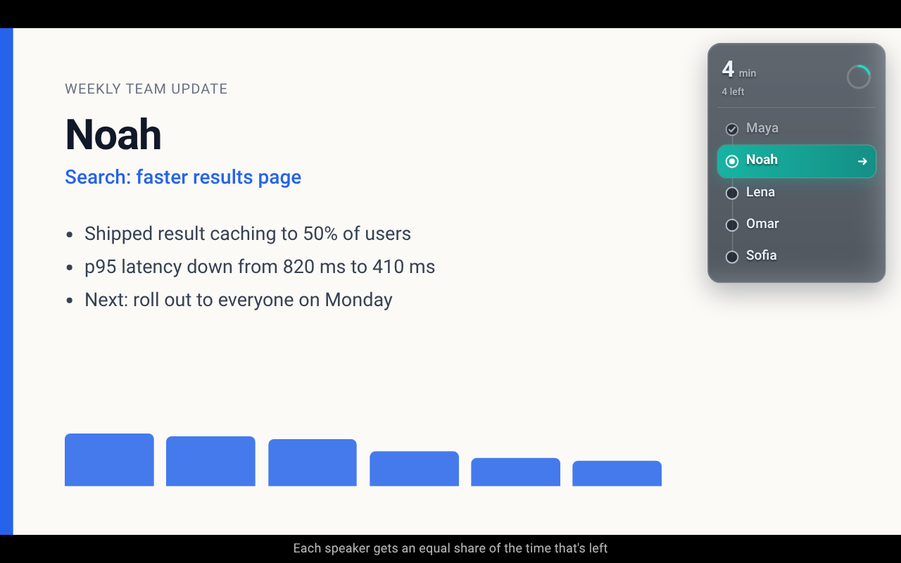

A FREE CHROME EXTENSION FOR GOOGLE SLIDES
Keep time.
Keep the agenda
moving.
Multiple speakers or topics. One fixed end time. Keep the remaining time visible so everyone knows when to wrap up and move on.

FOR EVERY TIMED AGENDA
A new speaker.
A new topic.
A visible time budget.
Workshops, panels, board and committee meetings, lessons, training sessions, and team updates: any meeting can have several sections competing for limited time. Use Google Slides to mark where each speaker or topic begins.
The audience-facing slideshow shows the current section’s countdown and what is still on the agenda. One person can lead several topics, several people can speak, or you can mix both. Shared time awareness makes it easier to move the discussion forward. The overlay works in fullscreen, and clicks pass through to your slides.
HOW IT WORKS
Set the agenda. Make the time visible.
-
01
Scan your deck
Open the extension in the Slides editor. Read the slide titles and check the first slide of each speaker or topic section.
-
02
Set the meeting time
Choose a start time and duration. Start the session before presenting.
-
03
Move to the next section
Reaching a marked slide starts the next speaker or topic section, with a share of the time left. Use the manual next-section control when you are ready to move a discussion on.
THE REMAINING-TIME RULE
One topic runs long.
Everyone can see the tradeoff.
Each section’s allocation is the time left in the meeting divided by the number of sections still waiting, including the one starting.
This shares the remaining budget. An early overrun leaves less time for later speakers or topics. The timer makes this visible; it does not enforce a limit, interrupt anyone, or guarantee equal airtime.
ILLUSTRATIVE EXAMPLE
22 min ÷ 5 = 4.4 min
The overlay displays whole minutes, so this appears as “4 min”. If the first speaker finishes after two minutes:
20 min ÷ 4 = 5 min
The next speaker gets five minutes.
PRIVACY
Your setup stays
in your browser.
The extension has no developer backend, separate accounts, advertising, or analytics. Slide titles and settings live in local browser storage.
Scanning fetches views of your open presentation from docs.google.com using your existing Google session. Read the privacy policy.
QUESTIONS BEFORE YOUR FIRST MEETING
A few useful details.
Does this work with Zoom or Google Meet?
The timer runs on Google Slides in Chrome. Attendees can see it when you share the slideshow surface containing it. It does not provide a native Zoom or Meet integration. Check your sharing preview before the meeting.
What happens when a speaker or topic runs over?
The timer says “Wrap up” in amber. More than a minute over, it shows negative minutes in red with a slow fade. The next section’s allocation uses the reduced time left.
Does the timer appear in speaker notes?
It appears on the audience-facing slideshow. The separate speaker-notes window is intentionally excluded.
Can I use it with an existing deck?
Yes. Scan the deck and mark the slides where speaker or topic sections begin. Detail slides stay within the current section. You can also add sections manually if scanning fails.
Do I have to configure it again next week?
Settings are saved locally per presentation. Rescan and adjust the start time for the next meeting. Another organizer, browser, or copied deck needs its own setup.
Make time visible
at your next meeting.
Use your own speaker or topic sections. The weekly-update template is one way to start.
Add to Chrome Get the template →